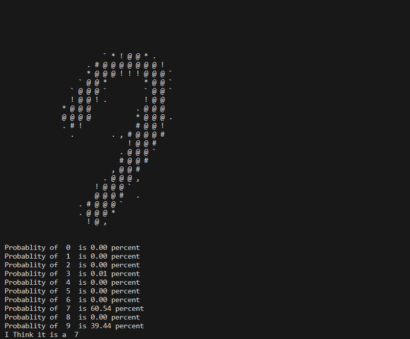
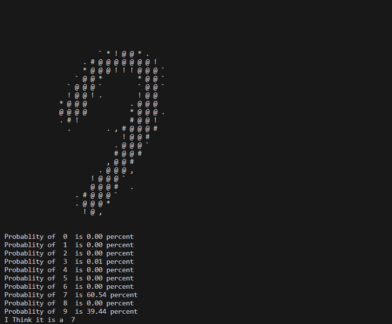
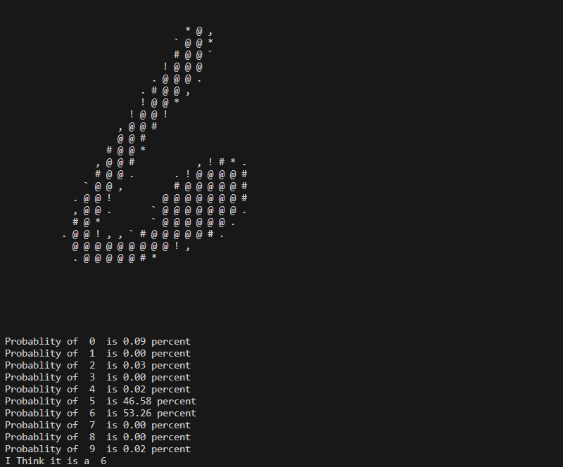
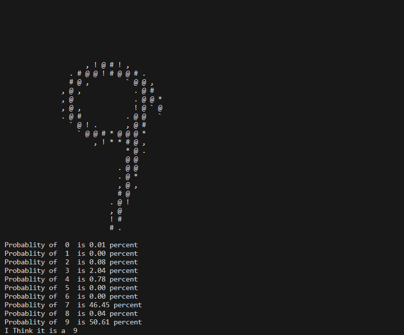

26-September-2023
I recently tried to make a pretty simple and small Neural Network to understand how Neural Networks work, specifically how Neural Networks are Trained with Backpropagation.
The Code that was written is mainly from a YouTube Video by Samson Zhang explaining how Neural Networks can be built from Scratch without using Libraries like Tensorflow.
Main Program
So the Neural Network was for Identifying Digits of 28 by 28 pixels from the MNIST Dataset (Modified National Institute of Standards and Technology Dataset). They have thousands of Labeled Hand Written Digits that can be used for Training my Neural Network and also for Testing it.
The structure of this Neural Network is 784 inputs 10 Neurons in the Hidden Layer and 10 Neurons in the Output Layer.
What we now need to do is to Read the Data from a CSV file and convert it into a NumPy Array.
# Importing the Dataset
data = pd . read_csv ( 'Data/mnist_train.csv' )
data = np . array ( data)
Shuffle It and divide it into Training Data and Testing Data.
m, n = data. shape
np . random . shuffle ( data)
data_test = data[ 0 : 1000] .T
Y_test = data_test[ 0 ]
X_test = data_test[ 1 : n]
X_test = X_test / 255
data_train = data[ 1000 : m] .T
Y_train = data_train[ 0 ]
X_train = data_train[ 1 : n]
X_train = X_train / 255
Define ReLU (Rectified Linear Unit) and SoftMax Activations.
# Activation Function Rectified Linear Unit (ReLU)
def ReLU ( x) :
return np . maximum ( x, 0 )
# Activation Function Softmax
def softmax ( z) :
a = np . exp ( z) / sum ( np . exp ( z))
return a
Initialize the Weights and Biases in the form of NumPy Arrays at random.
# Function to Initialize the Parameters at Random
def init_parameters () :
weights_01 = np . random . rand ( 10 , 784 ) - 0.5
biases_01 = np . random . rand ( 10 , 1 ) - 0.5
weights_02 = np . random . rand ( 10 , 10 ) - 0.5
biases_02 = np . random . rand ( 10 , 1 ) - 0.5
return weights_01, biases_01, weights_02, biases_02
Perform Forward Propagation.
# Function for Forward Propagation
def forward_propagation ( weights_01, biases_01, weights_02, biases_02, x) :
z1 = weights_01. dot ( x) + biases_01
a1 = ReLU ( z1)
z2 = weights_02. dot ( a1) + biases_02
a2 = softmax ( z2)
return z1, a1, z2, a2
Derivative of ReLU Activation and a Function for One Hot Encoding would be needed for Performing Back Propagation.
# Derivative of Activation function ReLU
def ReLU_derivative ( x) :
return x > 0
# Function for One Hot Encoding
def one_hot ( y) :
one_hot_y = np . zeros (( y. size, y. max () + 1 ))
one_hot_y[ np . arange ( y. size) , y] = 1
one_hot_y = one_hot_y.T
return one_hot_y
Perform Back Propagation.
# Function for Back Propagation
def back_propagation ( z1, a1, z2, a2, weights_01, weights_02, x, y) :
one_hot_y = one_hot( y)
dz2 = a2 - one_hot_y
dweights_02 = 1 / m * dz2. dot ( a1.T )
dbiases_02 = 1 / m * np . sum ( dz2)
dz1 = weights_02.T. dot ( dz2) * ReLU_derivative ( z1)
dweights_01 = 1 / m * dz1. dot ( x.T )
dbiases_01 = 1 / m * np . sum ( dz1)
return dweights_01, dbiases_01, dweights_02, dbiases_02
As we now have Derivatives of Weights and Biases, we can use them to Update Our Weights and Biases.
# Function for Updating Parameters based on Derivatives of Weights and Biases Computed through Back Propagation
def update_parameters ( weights_01, biases_01, weights_02, biases_02, dweights_01, dbiases_01, dweights_02, dbiases_02, alpha) :
weights_01 = weights_01 - alpha * dweights_01
biases_01 = biases_01 - alpha * dbiases_01
weights_02 = weights_02 - alpha * dweights_02
biases_02 = biases_02 - alpha * dbiases_02
return weights_01, biases_01, weights_02, biases_02
All we now have to do is repeat this process just enough times to get our Neural Network to Fit enough but not Overfit.
Accuracy of the Network can also be monitored in between the Training Iterations. For that we will need a simple function that will get us all the predictions our Neural Network made, and also a simple function that can compare our predictions with the actual answers to calculate the accuracy of our predictions.
# Function to get all Prediction Neural Network has made
def get_predictions( A2) :
return np . argmax ( A2, 0 )
# Function to get Accuracy of Neural Network by comparing Predictions and Actual Answers
def get_accuracy ( predictions, y) :
print ( predictions, y)
return np . sum ( predictions == y) / y. size
Now Accuracy of our Neural Network can be printed after every certain Number of Iterations during Training.
# Initialize Parameters
weights_01, biases_01, weights_02, biases_02 = init_parameters ()
# Iterating our Neural Network for Training
for i in range( iterations) :
# Forward Propagation
z1, a1, z2, a2 = forward_propagation ( weights_01, biases_01, weights_02, biases_02, x)
# Back Propagation
dweights_01, dbiases_01, dweights_02, dbiases_02 = back_propagation ( z1, a1, z2, a2, weights_01, weights_02, x, y)
# Updating Parameters
weights_01, biases_01, weights_02, biases_02 = update_parameters ( weights_01, biases_01, weights_02, biases_02, dweights_01, dbiases_01, dweights_02, dbiases_02, alpha)
# After Every 50 Iterations
if i % 50 == 0 :
# Print Iteration Count and Accuracy our Neural Network has Achieved
print ( "Iteration: " , i)
print ( "Accuracy: " , get_accuracy ( get_predictions ( a2) , y))
Storing the Parameters
Another thing I did in this project was to store the parameters of this Neural Network in a JSON file, and I used them in another Python File to test the accuracy of this Neural Network.
# Storing the Parameters in JSON, so can be used for Testing in any Other Program
# (.tolist() function is used because Json can't store Numpy Arrays, for testing, it has to be converted into Numpy Arrays again)
data = {
"Weights-01" : weights_01.tolist () ,
"Biases-01" : biases_01.tolist () ,
"Weights-02" : weights_02.tolist () ,
"Biases-02" : biases_02.tolist ()
}
with open ( "Parameters.json" , "w" ) as file:
json . dump ( data, file)
Visualizing the Digits
I also wrote a small Python Program just to Visualize a random digit from the Dataset onto the Console.
All it does is take the Dataset, convert it into a NumPy Array, select a random number from 0 to the length of the Dataset, and Draw the Digit of that Index onto the Console using different characters for different ranges of Brightness.
# Selecting a Random Number as Index
index = random . randrange ( 0 , 4997 )
# Drawing the Digit of that Index on the Console
for i in range ( 1 , 785 ) :
if data[ index] [ i] >= 0 and data[ index] [ i] <= 30 :
print ( " " , end= " " )
elif data[ index] [ i] >= 31 and data[ index] [ i] <= 60 :
print ( "." , end= " " )
elif data[ index] [ i] >= 61 and data[ index] [ i] <= 90 :
print ( "," , end= " " )
elif data[ index] [ i] >= 91 and data[ index] [ i] <= 120 :
print ( "`" , end= " " )
elif data[ index] [ i] >= 121 and data[ index] [ i] <= 150 :
print ( "*" , end= " " )
elif data[ index] [ i] >= 151 and data[ index] [ i] <= 180 :
print ( "!" , end= " " )
elif data[ index] [ i] >= 181 and data[ index] [ i] <= 210 :
print ( "#" , end= " " )
elif data[ index] [ i] >= 211 :
print ( "@" , end= " " )
if ( i - 0 ) % 28 == 0 :
print ( " " )
Testing the Accuracy
I wrote a different Python file to test the accuracy of the Neural Network, in that file I initially imported the Parameters from our JSON file and turned them into NumPy Arrays.
# Importing Stored Parameters from Json File
with open ( "Parameters.json" , "r" ) as file:
parameters = json . load ( file)
# Extracting Weights and Biases from JSON lists
weights_01 = parameters[ "Weights-01" ]
biases_01 = parameters[ "Biases-01" ]
weights_02 = parameters[ "Weights-02" ]
biases_02 = parameters[ "Biases-02" ]
# Turning our Weights and Biases into Numpy Arrays
weights_01 = np . array ( weights_01)
biases_01 = np . array ( biases_01)
weights_02 = np . array ( weights_02)
biases_02 = np . array ( biases_02)
Import the Test Data from a different CSV file, convert it into a NumPy Array, shuffle it, and select only the first one Digit to test our Neural Network.
# Importing the Dataset for Testing
test_data = pd . read_csv ( 'Data/mnist_test.csv' )
# Turn Dataset into Numpy Array and Shuffling it
test_data = np . array ( test_data)
m, n = test_data. shape
np . random . shuffle ( test_data)
# Selecting one Digit from the Shuffled Dataset
data_test = test_data [ 0 : 1 ] .T
Y_test = data_test [ 0 ]
X_test = data_test [ 1 : n ]
X_test = X_test / 255
We will also need the Activation functions from the Main file, and use them to perform Forward Propagation.
# Activation Function Rectified Linear Unit (ReLU)
def ReLU ( x) :
return np . maximum ( x, 0 )
# Activation Function Softmax
def softmax ( z) :
a = np . exp ( z) / sum ( np . exp ( z))
return a
# Forward Propagating the Input
z1 = weights_01. dot ( X_test) + biases_01
a1 = ReLU ( z1)
z2 = weights_02. dot ( a1) + biases_02
a2 = softmax ( z2)
Simply Calculate the Digit with the Highest Probability, print the probability of each Digit, and print the Digit with the Highest Probability as the Response of our Neural Network.
# Finding the index of Highest Probability after Forward Propagation
max_val = a2[ 0 ]
index = 0
for i in range( len ( a2)) :
if a2[ i] >= max_val:
index = i
max_val = a2[ i]
# Listing the Probability of Each Digit being the Answer
for i in range( 0 , 10 ) :
print ( "Probability of " , i, " is %.2f percent" % ( a2[ i][ 0 ] * 100 ))
# Printing the Prediction of our Neural Network
print ( "I think it is a " , index)
We can also Draw the Digit on the Console before showing us the probabilities of the answer in the same way we did before.
Here are a few examples of Predictions that the Neural Network has made.

 

Here the Network seems to question a little whether it's a 7 or a 9.
Confused here about a 5 and a 6.
Another confusion here between a 7 and a 9.

Here it seems to consider 4, 5, and 6 a considerable possibility.
Most of the Digits I have seen it answer to are mostly Accurate other than a few that are distorted quite a bit.